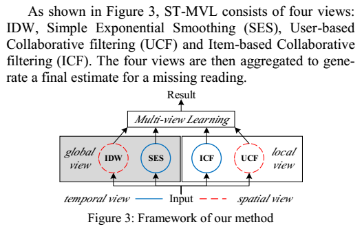
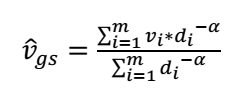
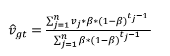
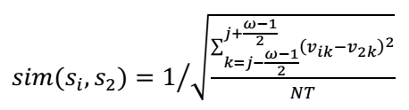
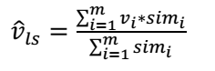
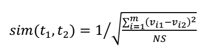
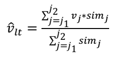
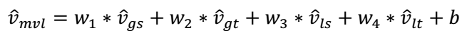

ST-MVL 遥感时序数据插值
Overview
Spatio-temporal multiview-based learning method 基于时空多视图的学习方法
考虑：
- 同一时序数据中不同时间戳的读数之间的时间相关性
- 不同时序数据之间的空间相关性
结合了：
- 由反距离加权插值和简单指数平滑组成的经验统计模型
- 特定的数据驱动算法
NMF 非负矩阵分解
block missing是极端情况
ST-MVL的核心就是四种算法结合，如下图

SES 简单的指数平滑，根据同一传感器的其他时间戳的读数来做估计，属于global temporal view
IDW 反距离加权插值，根据空间领域的读数来做估计，属于global spatial view
UCF 基于用户（指的是传感器），根据传感器最近的读数和空间领域中相近的传感器的读数之间的相似性来估计，属于local spatial view
ICF 基于不同时间戳的最近读数之间的相似性来做估计，属于local temporal view
IDW 反距离加权插值

di是sensor si和目标sensor之间的距离，α是自定义的幂权重
the First Law of Geography: Everything is related to everything else, but near things are more related than distant things （距离越近越相关）
SES 指数平滑

tj是目标读数和当前读数之间的时间间隔，β是自定义的(0,1)区间内的平滑参数
时间越近越相关
UCF user-based collaborative filtering
建立一个local data matrix，大小为N*ω（N为sensor数量，ω是自定的size，筛出前后的时间戳）

于是sensor之间的相似度可以这样定义：（NT是两个sensor都有读数的时间戳个数）

然后就可以估计：

ICF item-based collaborative filtering
同样的local data matrix，算时间戳之间的相似度（NS是两个时间戳都有读书的sensor个数）

然后就可以估计：

Multiview Learing
